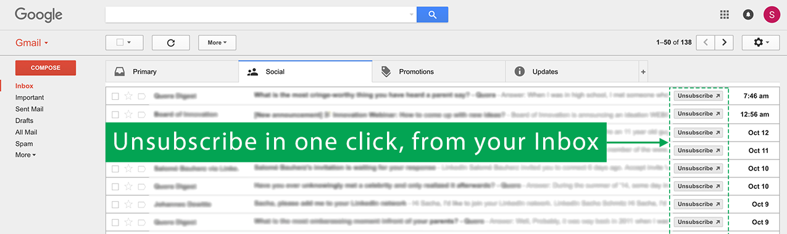

Gmail Unsubscriber needs access to Gmail
to find unsubscribe links
Gmail Unsubscriber needs access to Gmail to find unsubscribe links
Browse your emails
Find the "unsubscribe" buttons to the right of your emails in which a link to unsubscribe has been found (mostly in Social, Promotions & Updates tabs).
We don't care about your emails
Gmail Unsubscriber needs to read your emails to find links that will let you unsubscribe easily from non desired emails. However, the beauty of chrome extensions is that our code is stored and runs on your machine. That means that we don't need a server to process your emails and therefore, we don't store anything externally about you or your emails.
Gmail Unsubscriber doesn't share your emails with any third party. We use InboxSDK's library as a high-level Javascript API to build our desired behavior on top of Gmail. That way, we don't need to reinvent the wheel - it is particularly well maintained, it takes care of edge-cases and is performant. They can't read your emails, they don't have access to your Gmail token and they won't share any data that could identify you.
Nothing is worth a personal inspection. Have a look at our unobfuscated code (it might be ugly though but hey, this is still a work in progress).
Any question/problem/concern/request/thing else ?
Feel free to drop me a line: sacha.schmitz@gmail.com
You can also rate this extension in the Chrome webstore.